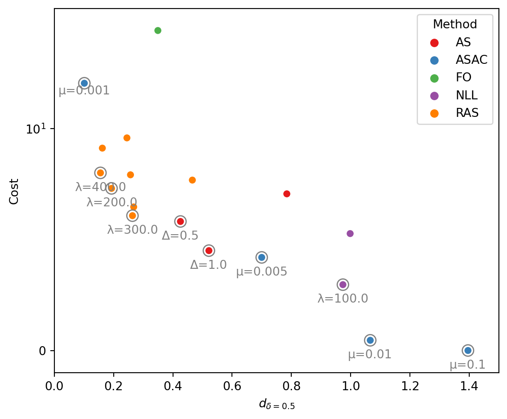

For each method, we select the hyperparameter based on their cost efficiency, i.e., the achieved accuracy (PRC) per unit acquisition cost. We ignore the sensing policies that made no observation (cost = 0). The benchmark result of RAS agains baselines are shown as follows.
Benchmark evaluation on the synthetic dataset.
```{python}# | code-fold: true# | code-summary: Benchmark evaluation on the synthetic dataset.# | code-overflow: wrapgrouped = metrics.groupby(["method", "params"])df = pd.DataFrame(columns=metrics.columns)for i, (m, g) inenumerate(grouped): stats = g[scores].apply(mean_confidence_interval) stats = stats.iloc[:2].apply(lambda x: f"{x.iloc[0]:.3f}±{x.iloc[1]:.3f}", axis=0) df.loc[i] = stats df.loc[i, ["method", "params"]] = mreport = []report.append(df[df["method"] =="FO"])for m, g in df.groupby("method"):if m =="FO":continue# For each method, we select the most "cost-efficient" model for the benchmark.# Thus, we consider the accuracy (PRC) per unit acquisition cost. prc = g["prc"].apply(lambda s: float(s.split("±")[0])) cost = g["cost"].apply(lambda s: float(s.split("±")[0])) w = prc / (cost * (cost >0) +1e10* (cost ==0)) idx = w.argmax() report.append(g.iloc[[idx]])report = pd.concat(report)result = report[["method", "params"] + scores].rename( columns={"method": "Method","params": "Params","roc": "ROC","prc": "PRC","cost": "Cost","delay(p>=0.3)": "d_{δ=0.3}","delay(p>=0.5)": "d_{δ=0.5}","delay(p>=0.7)": "d_{δ=0.7}", })display(result)```
Method
Params
ROC
PRC
Cost
d_{δ=0.3}
d_{δ=0.5}
d_{δ=0.7}
7
FO
0.680±0.000
0.655±0.000
31.000±0.000
0.502±0.000
0.349±0.000
0.285±0.000
2
AS
Δ=1.0
0.671±0.001
0.614±0.001
4.501±0.497
0.577±0.029
0.522±0.012
0.479±0.015
5
ASAC
μ=0.01
0.605±0.096
0.559±0.080
0.460±1.078
1.099±0.664
1.066±0.699
1.052±0.641
8
NLL
λ=100.0
0.636±0.023
0.588±0.016
2.968±0.774
0.993±0.131
0.974±0.141
0.975±0.147
13
RAS
λ=300.0
0.680±0.003
0.647±0.006
6.077±0.953
0.325±0.084
0.264±0.086
0.246±0.071
In the following table, we mark the location of the best performance in each column and evalute the \(p\)-values by performance t-test against the rest methods.
Method
ROC
PRC
Cost
d_{δ=0.3}
d_{δ=0.5}
d_{δ=0.7}
7
FO
best
best
0.0
0.000015
0.002506
0.042681
2
AS
0.0
0.0
0.0
0.000002
0.000001
0.000001
5
ASAC
0.009035
0.000765
best
0.000967
0.001065
0.000589
8
NLL
0.000031
0.0
0.000034
0.0
0.0
0.0
13
RAS
1.0
0.000386
0.0
best
best
best
Below, we propose one optional criterion to find the best method by considering both acquisition cost and diagnositic accuracy. We consider the FO baseline with dense sensing histories as a reference, and find the optimal sensing history that achieves the largest acquisition cost reduction while maintaining a reasonable accuracy. Our criterion is defiend as follows for each method (except for the FO baseline). \[
\frac{\max (0, \mathrm{PRC}_{\mathrm{FO}} - \mathrm{PRC})}{\mathrm{Cost}_{\mathrm{FO}} - \mathrm{Cost}},
\] where a small value indicates more effective active sensing strategy (small loss in accuracy but high reduction in acquisition cost).
Find the overally best method.
```{python}# | code-fold: true# | code-summary: Find the overally best method.# | code-overflow: wrapperf_fo = report[report["method"]=="FO"]rest = report[report["method"]!="FO"]PRC_FO, COST_FO = perf_fo["prc"].item(), perf_fo["cost"].item()PRC_FO =float(PRC_FO.split("±")[0])COST_FO =float(COST_FO.split("±")[0])prc = rest["prc"].apply(lambda s: float(s.split("±")[0]))cost = rest["cost"].apply(lambda s: float(s.split("±")[0]))w = (PRC_FO - prc).clip(0)/(COST_FO - cost)idx = w.argmin()best_method = rest.iloc[idx]["method"]best_params = rest.iloc[idx]["params"]print(f"Based on the above criterion, the best method is {best_method} ({best_params})") # noqa```
Based on the above criterion, the best method is RAS (λ=300.0)
ADNI dataset
We perform similar analysis on the ADNI dataset. The benchmark results are given below.
Method
Params
ROC
PRC
Cost
d_{δ=0.1}
d_{δ=0.3}
d_{δ=0.5}
6
FO
0.747±0.000
0.577±0.000
26.865±0.000
0.141±0.000
0.510±0.000
0.591±0.000
1
AS
Δ=1.5
0.704±0.023
0.519±0.034
3.566±0.854
1.326±0.096
2.314±0.348
2.357±0.375
5
ASAC
μ=0.1
0.521±0.160
0.352±0.103
0.043±0.186
0.527±0.000
3.008±3.610
3.581±0.000
8
NLL
λ=200.0
0.697±0.018
0.512±0.020
3.986±0.493
1.040±0.149
2.176±0.060
2.739±0.135
15
RAS
λ=400.0
0.730±0.007
0.560±0.012
8.614±1.157
0.820±0.096
1.370±0.227
1.192±0.176
The best performance in each column and the overall best method is reported as follows.
Method
ROC
PRC
Cost
delay(p>=0.1)
d_{δ=0.3}
d_{δ=0.5}
6
FO
best
best
0.0
best
best
best
1
AS
0.003157
0.004419
0.000165
0.000002
0.000061
0.000089
5
ASAC
0.008679
0.001764
best
0.0
0.078592
0.0
8
NLL
0.000705
0.000384
0.000014
0.000034
0.0
0.000001
15
RAS
0.00118
0.00859
0.000016
0.000018
0.000211
0.000316
Based on our proposed criterion, the best method is RAS (λ=400.0)
Our method achieves a desirable balance between diagnosis accuracy and acquisition cost and is evaluated to be the best sensing policy.
Discussion
Trade-off between timeliness and acquisition costs.
The selection of model parameters could be difficult when two or more criteria are involved in the evaluation. Here, we illustrate the sensing performance of different policies on the synthetic dataset and highlight the ones in the Pareto front with gray circles in Figure 1.

Figure 1: Pareto front of different sensing policies.
These policies are considered Pareto optimal since their timeliness (\(d_{δ=0.5}\)) and average acquisition cost cannot be simultaneously improved by swapping parameters with other policies. Benefitted from the risk-averse training strategy, most sensing policies obtained via RAS are centered around the knee point of the Pareto front, which helps to explain the outstanding cost efficiency of RAS as reported above.
Improvement of the sensing deficiency distribution
To illustrate the effectiveness of our risk-averse active sensing approach, we compare the empirical distribution of sensing deficiency \(Q^π(X)\) of RAS with the ablations of risk-neutral sensing (\(α = 1.0\)) and AS baseline (\(α = 1.0\), constant acquisition interval \(∆ = 1.0\)) on the synthetic dataset. All three models are trained with the same trade-off coefficient \(λ = 300\). As illustrated in Figure 2, RAS is able to effectively optimize the sensing performance for trajectories in the long tail of sensing deficency distribution and reduces the upper \(α\)-quantile of \(Q^π(X)\) to \(ρ_{α=0.1} = 10.40\). Factor α = 1.0 completely disables the risk-aversion training strategy in RAS. Thereby, a clear increase of sensing deficiency (quantile \(ρ_{α=0.1}\) grows from 10.40 to 20.01) is observed with the risk-neutral ablation of RAS. Similarly, without adaptive scheduling of acquisition intervals and risk-averse optimization strategies, the AS baseline illustrates the failure of conventional active sensing paradigms at the long tail of \(Q^π(X)\) distribution.